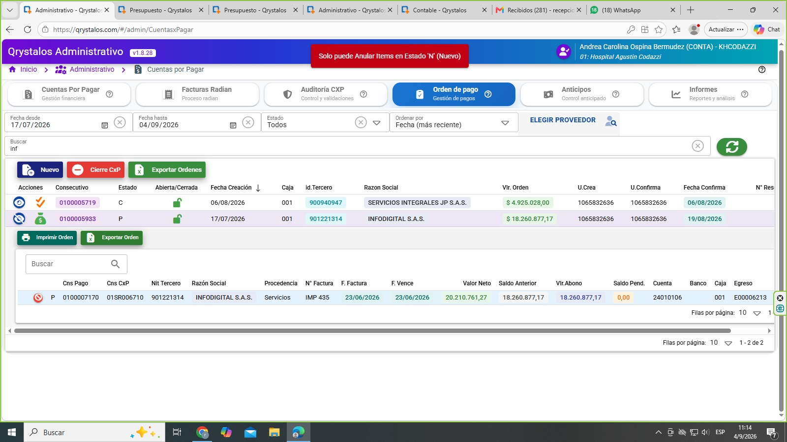

Mockup UX — propuesto · REQ 0100016560 · Caja anular egreso → Orden de pago liberada · Rama bugfix/HCODAZ22
caso 20261001-0100016560 · ventana propuesta, no la captura del error
Qué se desarrolla
Al anular un egreso de CxP en caja, la orden de pago queda liberada (estado Nuevo, sin nro. de egreso) para autorizar y pagar de nuevo. Ya no queda atrapada en Pagado con el recibo anulado.
Qrystalos Administrativo v2.0.x
Hospital Agustín Codazzi
Inicio > Administrativo > Cuentas por Pagar > Orden de pago
CXP
Orden de pago
Anticipos
Informes
Tras anular egreso E00006213 en Caja: la orden 0100005933 quedó en estado N (Nuevo), sin nro. de egreso. Puede autorizar y programar el pago otra vez.
| CNS orden |
Tercero |
Fecha |
Valor |
Estado |
Cerrada |
| 0100005933 |
INFODIGITAL S.A.S. · 901221314 |
17/07/2026 |
$18.260.877,17 |
N propuesto |
No |
Detalle de la orden (propuesto) — ítem 0100007170 · CxP 01SR006710 · IMP 435
Campos liberados tras anular el egreso (antes estaban en P con E00006213).
| Cns Pago |
Cns CxP |
Estado |
Nro. factura |
Vlr. abono |
Saldo pend. |
Nro. egreso |
| 0100007170 |
01SR006710 |
N |
IMP 435 |
$18.260.877,17 |
según recalculo CxP |
(vacío) |
Criterios visibles en esta ventana
- FCXPP fuera de P: Estado N (o A) y Nro. egreso limpio.
- FCXPPM no permanece en P; puede autorizar / generar egreso de nuevo.
- Saldo de la CxP se recalcula para reprogramar el pago.
- No depende de «Anular Items» con estado P (ese candado se mantiene).
- Caso Codazzi E00006213 / OP 0100005933 coherente tras el fix.
Hoy — referencia del problema (no es el entregable)

Cambio vs hoy: Hoy la OP queda en P con egreso anulado y el usuario no puede reprogramar.
Propuesto: al anular el egreso CXP en caja, la OP se libera (N, sin egreso) en el mismo acto (SQL atómico + refuerzo FE).